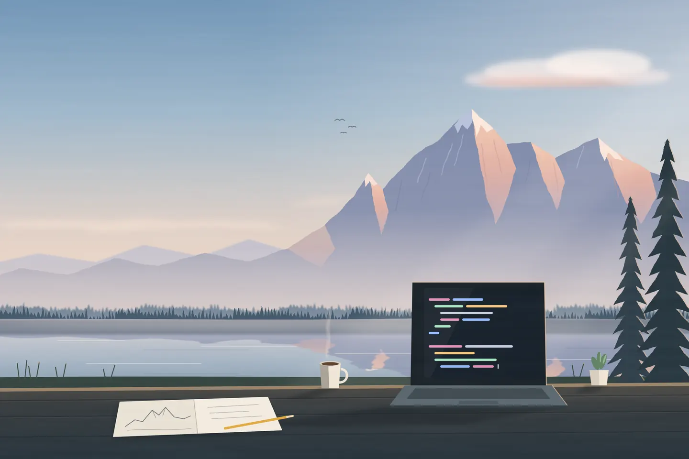

Firemní web, běží naostro
Špatní Kluci
Web pro ostravskou firmu, která dodává komunikační technologie profesionálům. Návrh, kód i nasazení jsem dělal sám.
HTML, CSS
spatnikluci.cz

Firemní web, běží naostro
Web pro ostravskou firmu, která dodává komunikační technologie profesionálům. Návrh, kód i nasazení jsem dělal sám.
Školní web
V čem se programují hry, AI, weby nebo mobilní aplikace, každý obor s ukázkou kódu.
Experimenty
Malé programy mimo prohlížeč.
Studuju a programuju. Kreslení mě naučilo dívat se na celek, a stejně se dneska dívám na web: co uvidíš první, kam se podíváš potom a kde máš kliknout.
Pracuju s HTML, CSS, Pythonem, Gitem a GitHubem.